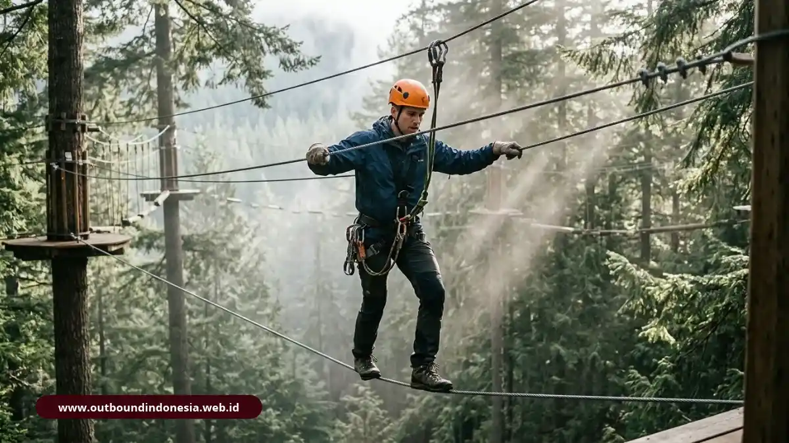

Contoh kegiatan outbound training mencakup permainan low impact seperti trust fall, air bridge, dan frantic balloon, serta aktivitas high impact seperti rope course, flying fox, dan rafting.
Pilihan terbaik tergantung tujuan program dan kesiapan fisik peserta, bukan sekadar seberapa menantang aktivitasnya.
Apa Saja Contoh Kegiatan Outbound Training yang Populer?
Kegiatan outbound yang populer meliputi permainan kepercayaan, permainan koordinasi, permainan strategi, dan tantangan fisik. Delapan contoh di bawah ini mewakili keempat jenis itu:
- Trust fall: satu orang jatuh ke belakang dan ditangkap tim. Melatih kepercayaan.
- Air bridge: tim menyusun jembatan dari bahan terbatas. Melatih perencanaan dan pembagian peran.
- Frantic balloon: tim menjaga balon agar tidak jatuh dengan aturan tertentu. Melatih koordinasi.
- Spider web: tim melewatkan seluruh anggota lewat jaring tali tanpa menyentuhnya. Melatih strategi dan kesabaran.
- Blindfold walk: satu orang berjalan dengan mata tertutup dipandu suara rekan. Melatih kejelasan instruksi.
- Rope course: peserta melintasi lintasan tali di ketinggian dengan pengaman. Melatih keberanian dan dukungan tim.
- Flying fox: meluncur di kawat dengan harness. Melatih pengelolaan rasa takut.
- Rafting: tim mengarungi sungai dengan perahu karet dan pemandu. Melatih sinkronisasi di bawah tekanan.
Urutan ini juga lazim dijadikan alur rundown: mulai dari yang ringan sebagai pemanasan, lalu naik ke yang menantang setelah tim saling mengenal.
Apa Itu Aktivitas Outbound Low Impact?
Aktivitas low impact adalah permainan outbound berisiko fisik rendah yang dilakukan di area terbatas, biasanya tanpa peralatan pengaman khusus, dan berfokus pada komunikasi, kepercayaan, serta koordinasi.
Keunggulannya adalah fleksibilitas. Aktivitas ini dapat dijalankan di aula, halaman kantor, atau lapangan kecil dengan peserta dari berbagai usia dan kondisi fisik.
Keterbatasannya, tantangan emosional yang muncul cenderung lebih ringan sehingga kurang cocok jika tujuannya menguji ketahanan mental di bawah tekanan besar.
Contoh pemakaian yang sering berhasil adalah membuka program dengan satu atau dua permainan low impact untuk mencairkan suasana, kemudian memakai hasil pengamatan fasilitator sebagai bahan diskusi pertama.
Apa Itu Aktivitas Outbound High Impact?
Aktivitas high impact adalah kegiatan outbound dengan tantangan fisik atau ketinggian lebih besar yang memerlukan perlengkapan pengaman, instruktur bersertifikasi, dan prosedur keselamatan tertulis.

Peserta melintasi rope course dengan perlengkapan pengamanKarena melibatkan risiko nyata, peserta perlu dikenali kondisinya sebelum hari acara. Pertanyaan dasar tentang riwayat kesehatan, rasa takut ketinggian, dan kemampuan berenang membantu panitia menyiapkan alternatif. Peserta tidak boleh dipaksa.
Pilihan untuk berperan sebagai pendukung atau pengamat menjaga keselamatan sekaligus tetap memberi pelajaran.
Aspek psikologis juga penting. Orang yang berhasil melewati ketakutannya sering melaporkan peningkatan rasa percaya diri, tetapi pengalaman itu baru bernilai kerja bila dikaitkan dengan situasi profesional lewat refleksi.
Dari Mana Datangnya Aktivitas Rope Course dan Permainan Inisiatif?
Aktivitas seperti rope course dan permainan inisiatif berkembang dari program pendidikan petualangan, salah satunya Project Adventure yang dirintis di Massachusetts, Amerika Serikat, pada 1971.
Project Adventure berangkat dari lingkungan sekolah dan mengembangkan rangkaian tantangan berbasis kelompok yang kemudian banyak diadaptasi program pelatihan perusahaan di berbagai negara.
Adaptasi di Indonesia umumnya menggabungkan permainan tersebut dengan permainan lokal dan simulasi bernuansa kantor. Latar sejarah ini menjelaskan mengapa banyak aktivitas outbound punya struktur serupa walau diselenggarakan oleh penyedia berbeda.
Bagaimana Cara Memilih Kegiatan Outbound yang Cocok untuk Tim?
Pilih kegiatan dengan menjawab tiga pertanyaan: kompetensi apa yang ingin dilatih, bagaimana kondisi fisik peserta, dan berapa waktu serta anggaran yang tersedia. Aktivitas dipilih setelah ketiganya jelas.
Berikut pemetaan sederhana antara tujuan dan jenis aktivitas:
- Kepercayaan antaranggota: trust fall, blindfold walk.
- Komunikasi dan instruksi: air bridge, blindfold walk.
- Strategi dan pembagian peran: spider web, air bridge.
- Ketahanan dan keberanian: rope course, flying fox.
- Sinkronisasi tim: frantic balloon, rafting.
Untuk tim yang baru terbentuk, kombinasi low impact lebih aman. Untuk tim yang sudah solid dan ingin tantangan berbeda, high impact bisa menjadi puncak acara.
Bagaimana Menyusun Urutan Aktivitas dalam Satu Hari?
Susun urutan dari ringan ke berat: pembukaan dan pencairan suasana, permainan low impact, sesi inti dengan tantangan lebih besar, lalu debriefing menyeluruh dan rencana tindak lanjut.
Contoh alur sehari: pengarahan dan aturan keselamatan, satu permainan pencair suasana, dua simulasi low impact dengan debriefing singkat, istirahat, satu aktivitas inti yang lebih menantang, kemudian sesi refleksi penutup.
Jangan menaruh aktivitas tersulit di awal, sebab peserta belum saling percaya dan risiko cedera maupun penolakan lebih tinggi.
Apa yang Harus Diperhatikan Agar Aktivitas Outbound Aman?
Keselamatan bergantung pada penilaian risiko, perlengkapan yang layak, instruktur kompeten, briefing yang jelas, dan hak peserta untuk menolak atau berhenti kapan saja:
- Periksa lokasi dan perlengkapan sebelum kegiatan.
- Siapkan petugas P3K dan jalur evakuasi.
- Pantau cuaca dan siapkan rencana cadangan.
- Berikan briefing keselamatan sebelum setiap aktivitas.
- Hormati batasan fisik dan psikologis peserta.
Hal-hal ini membuat tantangan tetap bermanfaat dan tidak berubah menjadi risiko yang tidak perlu.
Mengapa Aktivitas Tanpa Debriefing Kurang Bernilai?
Tanpa debriefing, peserta mengalami permainan tetapi tidak menarik pelajaran darinya. Debriefing mengubah pengalaman menjadi pemahaman yang dapat dipakai di tempat kerja.
Fasilitator biasanya memakai tiga pertanyaan dasar: apa yang terjadi, mengapa itu terjadi, dan apa artinya bagi pekerjaan kita.
Misalnya, setelah air bridge, tim bisa menyadari bahwa mereka langsung bekerja tanpa menyepakati rencana, lalu mendiskusikan apakah kebiasaan itu juga muncul dalam proyek nyata. Pembahasan semacam ini memberi bobot pada permainan yang tampak sederhana.
Kesimpulan Praktis
Contoh kegiatan outbound training sangat beragam, tetapi nilai terbesar datang dari kecocokan aktivitas dengan tujuan dan dari debriefing sesudahnya.
- Gunakan low impact untuk tim baru, tim besar, atau peserta dengan kondisi fisik beragam.
- Gunakan high impact bila standar keselamatan terpenuhi dan peserta siap.
- Urutkan aktivitas dari ringan ke berat.
- Kaitkan setiap aktivitas dengan satu kompetensi kerja.

Tim Outbound Indonesia
Praktisi instruktur certified BNSP, spesialis simulasi team building, dan safety officer alam terbuka.